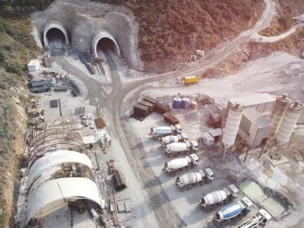
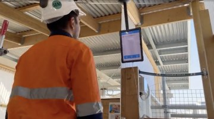
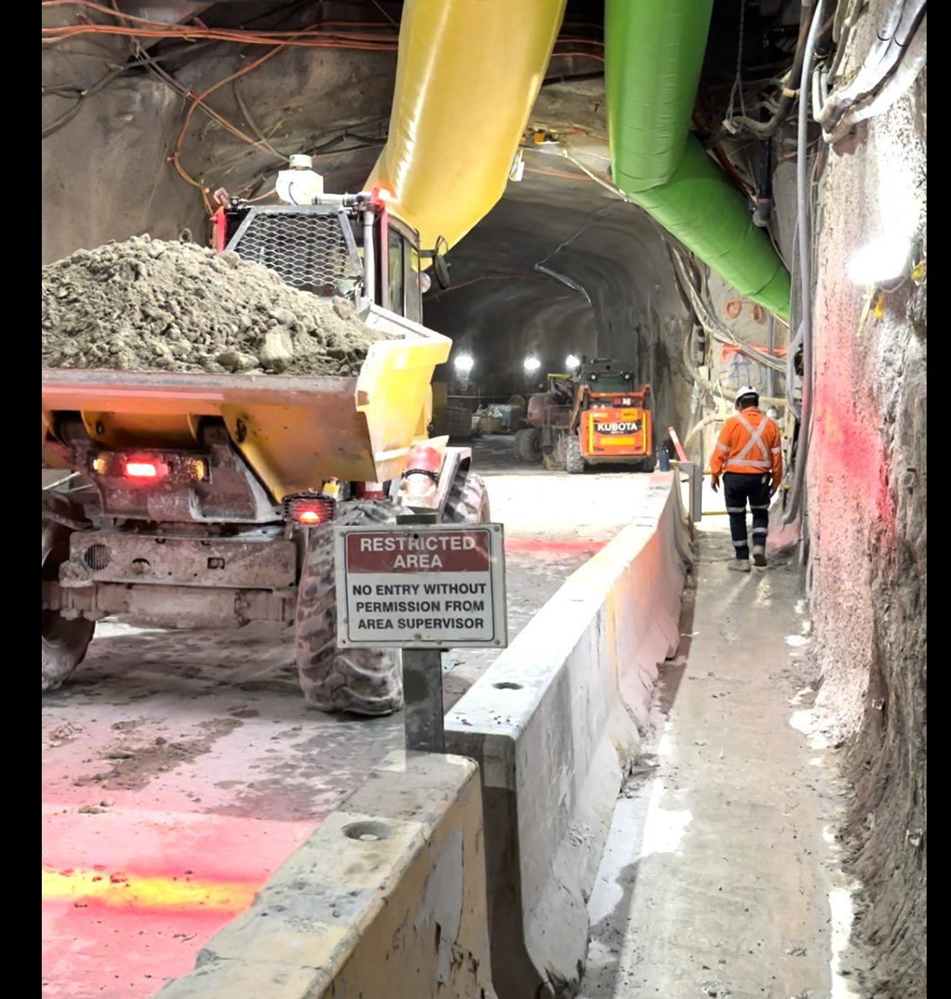
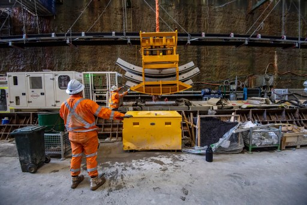
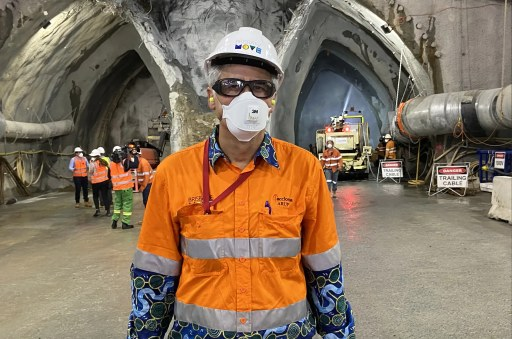
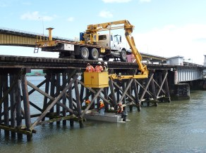
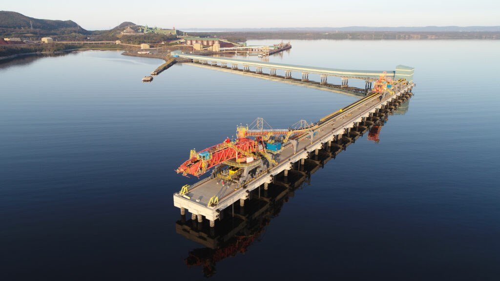
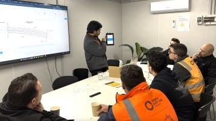
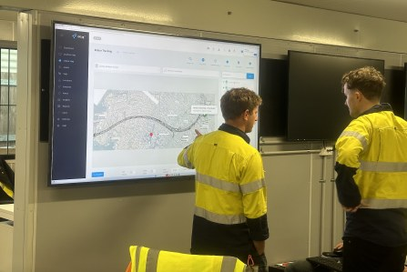

Operational Intelligence For Critical Infrastructure
Improve visibility, resilience and operational performance across critical environments.
Critical infrastructure operators face increasing pressure to improve reliability, safety and operational efficiency.
The iottag Operational Intelligence Platform helps organisations understand operational conditions in real time, providing the visibility needed to support stronger decision-making and more resilient operations.
Operating Critical Infrastructure
Is Becoming More Complex
Infrastructure environments often involve

Distributed Assets
Mobile Workforces

Operational Constraints

Safety Obligations

Regulatory Requirements
Understanding these conditions is essential for effective management.
The platform helps organisations connect information across workforce activity, assets, equipment and operational systems
to create a clearer operational picture.
One platform,
Complete visibility
The platform supports:
Workforce Visibility
Asset Performance
Operational Awareness
Emergency Preparedness
Environmental Awareness
Operational Resilience
Supporting Reliable Operations
Operational interruptions can have significant consequences.
The platform helps teams understand:
Supporting more informed operational decisions.
Emergency Preparedness & Response
Critical infrastructure operators require confidence during emergencies.
The platform supports:
Helping teams respond more effectively when conditions change.

Bridge Construction & Structural Infrastructure
Bridge construction and refurbishment projects create unique operational challenges.
Personnel often work across multiple levels, suspended access systems, scaffolding structures, barges, vessels and land-based work areas simultaneously.
Maintaining visibility across these environments can be difficult, particularly during severe weather events, emergency situations or high-risk maintenance activities.
The iottag platform helps organisations maintain real-time visibility of workforce activity, contractor locations, access points and operational conditions across the entire project environment.
By combining workforce intelligence, environmental monitoring, emergency response capabilities and operational visibility, teams gain the situational awareness required to improve workforce safety and strengthen project coordination.
Applications include
Bridge construction

Bridge refurbishment
Marine infrastructure

Ports and wharves
Rail viaducts
Elevated transport infrastructure
Operational Intelligence
In Context
The platform brings together information from:
Creating a shared understanding of the operational environment.

Visibility Beyond Operations
While operational teams use the platform to manage daily activities, leadership teams gain access to executive dashboards providing visibility into:
Supporting governance, reporting and long-term planning.

Built For Critical Environments
Supporting:
Providing operational intelligence where reliability, safety and resilience are essential.

Improve Visibility Across Critical Operations
Discover how Operational Intelligence helps organisations strengthen resilience, improve awareness and support better operational decisions.